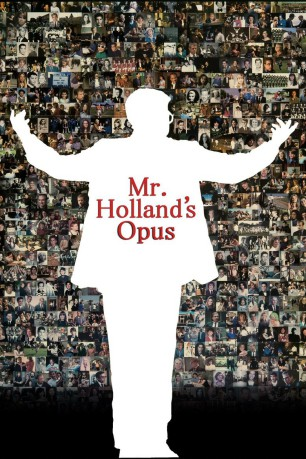

#781 Mr. Holland's Opus
Auszeichnungen: für 1 Oscars nominiert
 
 IMDB-Wertung: 7.3 / 10
IMDB-Wertung: 7.3 / 10  Metascore: 59
Metascore: 59 
Als sich der junge Komponist Glenn Holland (Richard Dreyfuss) Anfang der sechziger Jahre für eine Stelle als Musiklehrer an einer Highschool bewirbt, träumt er noch davon, eine große Symphonie zu komponieren. Den Lehrerjob nimmt er nur aus finanziellen Gründen an. Doch bald schon entwickelt sich aus dem Übergangsjob eine Passion. Eine Leidenschaft, die anfangs in keinem Verhältnis zu dem Musikverständnis seiner Schüler steht. Schritt für Schritt bringt er ihnen die Schönheit der Musik nahe und erweist sich als pädagogisches Naturtalent. Doch all die Jahre hat er seine Symphonie nie aus den Augen verloren...
Jahr: 1995
Dauer: 143 Minuten
FSK: 6
Land: USA Studio: Buena Vista PicturesTonspuren: DTS - ,
Untertitel: Deutsch,
Auflösung: 1080p (1920x816) Größe: 9738 MB
Genre: Drama, Musik
Regisseur: Stephen Herek
Drehbuch: Patrick Sheane Duncan
Soundtrack: Michael Kamen
Darsteller:
 Richard Dreyfuss als Glenn Holland
Richard Dreyfuss als Glenn Holland Glenne Headly als Iris Holland
Glenne Headly als Iris Holland Jay Thomas als Coach Bill Meister
Jay Thomas als Coach Bill Meister Olympia Dukakis als Principal Helen Jacobs
Olympia Dukakis als Principal Helen Jacobs William H. Macy als Vice Principal Gene Wolters
William H. Macy als Vice Principal Gene Wolters Alicia Witt als Gertrude Lang
Alicia Witt als Gertrude Lang Terrence Howard als Louis Russ
Terrence Howard als Louis Russ- Damon Whitaker als Bobby Tidd - Student
 Jean Louisa Kelly als Rowena Morgan
Jean Louisa Kelly als Rowena Morgan- Alexandra Boyd als Sarah Olmstead
- Joseph Anderson als Cole at 15 Years Old
- Anthony Natale als Cole at 28 Years Old
 Joanna Gleason als Governor Gertrude Lang
Joanna Gleason als Governor Gertrude Lang- Beth Maitland als Deaf School Principal
- Joshua Minnick als Mr. Shapiro
- Eric Michael Cole als Boy 2
- Zoe McLellan als Girl 4
- Jay Frank als Auditioner 9
 Alexander Emmert als 1st Chair Cellist
Alexander Emmert als 1st Chair Cellist- Cazzey Louis Cereghino als Graduate , uncredited
- Elizabeth Fournier als Woman in audience , uncredited
 Balthazar Getty als Stadler , uncredited
Balthazar Getty als Stadler , uncredited- Dennis Carl Gleason als Man in audience , uncredited
 Forest Whitaker als Bobby Tidd - Adult , uncredited
Forest Whitaker als Bobby Tidd - Adult , uncredited- Nicholas John Renner als Cole at 6 Years Old
- Patrick Fong als Study Hall Student
- Benjamin J. Dixon als Mr. Mims
- Kathryn Arnett als Ms. Swedlin
- Freeman O. Corbin als Mr. Sullivan
- Moira Feeney als Ms. Godfrey
- Ashley Hamrick als Miss Reeves
- Janine Shouse als Miss Schumaker
- Spencer Riviera als Mr. Hosta
- Dan Vhay als Mr. Malone
- Sean Bevington als Mr. McMartin
- John Henry Redwood als Mr. Russ
- Ted Roisum als Dr. Sorenson
- Mark Daniels als Ralph
- Kaili Carlton als Ms. Wayne
- Adam Fitzhugh als Mr. McKenzie
- Joe Campbell als Boy 3
- Tomiko Peirano als Girl 2
- Kasey Nelson als Girl 3
- Kelly M. Casey als Deaf School Teacher
- Michael Mendelson als Chaplain
- Alex Dudgeon als Todd Mark Markam -Auditioner 1
- Rachel Wooley als Auditioner 2
- Jordan Carlton als Auditioner 3
- Aurora Miller als Auditioner 4
- Paul Bernard als Auditioner 5
Datei: X:\1995\Mr. Holland's Opus (1995, FSK6, 1920x816).mkv seit 23.03.2015
Festplatte: HD 1992-1995
 Es gibt insgesamt 85 Filme in der Gruppe '1995'
Es gibt insgesamt 85 Filme in der Gruppe '1995'